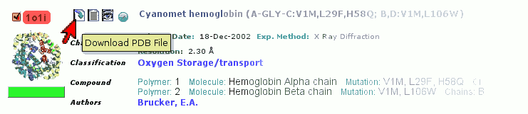

VMD
Dieser Artikel wurde für die folgenden Ubuntu-Versionen getestet:
Dieser Artikel ist mit keiner aktuell unterstützten Ubuntu-Version getestet! Bitte diesen Artikel testen und das getestet-Tag entsprechend anpassen.
Zum Verständnis dieses Artikels sind folgende Seiten hilfreich:
VMD  (Visual Molecular Dynamics) ist ein Programm zur Darstellung, Animation und Analyse von großen Biomolekülen
(Visual Molecular Dynamics) ist ein Programm zur Darstellung, Animation und Analyse von großen Biomolekülen  . Lässt man sich von der etwas eingestaubten Oberfläche nicht abschrecken, erschließt sich dem Anwender ein erstaunlich vielseitiges Programm, das publikationsreife Darstellungen von Makromolekülen und effizientes wissenschaftliches Arbeiten ermöglicht.
. Lässt man sich von der etwas eingestaubten Oberfläche nicht abschrecken, erschließt sich dem Anwender ein erstaunlich vielseitiges Programm, das publikationsreife Darstellungen von Makromolekülen und effizientes wissenschaftliches Arbeiten ermöglicht.
Die Software ist für alle Plattformen verfügbar und kostenlos für die private und universitäre Nutzung. Dennoch muss man sich vor dem Herunterladen namentlich registrieren.
Installation¶
VMD befindet sich nicht in den offiziellen Paketquellen, Abhängigkeiten können aber über die Paketverwaltung aufgelöst werden. Folgende Pakete müssen installiert [1] werden:
csh
 mit apturl
mit apturl
Paketliste zum Kopieren:
sudo apt-get install csh
sudo aptitude install csh
Manuell¶
Die Installation gestaltet sich relativ einfach und ist mit der folgenden Anleitung in wenigen Minuten geschafft. Bevor man von der Downloadseite das entsprechende Paket beziehen kann, muss man sich registrieren (Name und E-Mail-Adresse erforderlich). Nun wählt man entsprechend der eigenen Computerarchitektur das passende Paket, der Autor dieses Artikels wählte für sein 32-Bit-System von Intel das Paket LINUX OpenGL, im Zweifelsfall also dieses Paket herunterladen. Das Paket wird nun im Homeverzeichnis entpackt [5] und die Datei configure in einem Texteditor [4] geöffnet. Folgende Zeilen sollen angepasst werden (diese Tipps wurden übernommen von "Claus7" aus den ubuntuforums.org ):
1 2 3 4 5 | # Directory where VMD startup script is installed, should be in users' paths. $install_bin_dir="/usr/local/bin"; # Directory where VMD files and executables are installed $install_library_dir="/usr/local/lib/$install_name"; |
und nun wie folgt aussehen:
1 2 3 4 5 | # Directory where VMD startup script is installed, should be in users' paths. $install_bin_dir="/usr/local/vmd/bin"; # Directory where VMD files and executables are installed $install_library_dir="/usr/local/vmd/lib/$install_name"; |
Die weitere Arbeit und eigentliche Installation erfolgen in einem Terminal [3]. Nachdem in das Verzeichnis der Datei configure navigiert wurde, müssen eine Reihe an Befehlen eingegeben werden:
./configure LINUXAMD64 cd src sudo make install
Anstelle von LINUXAMD64 kann es sein, dass eine andere Prozessorarchitektur ausgewählt werden muss, eine Auflistung möglicher Optionen erhalt man durch Aufruf von ./configure ohne weitere Option. Die Installation ist hiermit komplett. Um das Programm zu starten [6] reicht der Befehl:
/usr/local/vmd/bin/vmd
Nun sollte man jedoch noch einen symbolischen Link nach /usr/local/bin anlegen, um das Programm wie gewohnt nur über den Namen der ausführbaren Datei starten [6] zu können:
sudo ln -s /usr/local/vmd/bin/vmd /usr/local/bin
Mit dem Menüeditor [7] kann nun auch noch ein Starter erstellt werden, der Befehl lautet schlicht
vmd
Benutzung¶
Die ersten Schritte¶
Protein Datenbank¶
 VMD ist auf sogenannte PDB-Dateien angewiesen, das sind 3D-Strukturdaten von Makromolekülen, die man aus einer riesigen Datenbank, die 50.000 solcher PDB-Dateien umfasst, kostenlos beziehen kann. Für die Verwaltung der Datenbank ist der Dachverband Worldwide Protein Data Bank verantwortlich, die Strukturdaten bezieht man nun am besten über eine ihrer Partnerseiten, bspw. über die US-Amerikanische RCSB PDB . Durch die Eingabe von Schlüsselwörtern - bspw. "hemoglobin" (die Begriffe sollten in englischer Form gewählt werden) - bekommt man eine Liste von Treffern, aus der man die gewollte Struktur auswählt. Die PDB Datei lädt man wie im folgenden Bild beschrieben herunter. Alternativ kann man sich auch den für jede PDB Datei eindeutigen vierstelligen Code (im Beispiel rot eingefärb "1o1i") merken und wie weiter unten beschrieben VMD direkt übergeben.
PDB-Datei öffnen¶
Wie erwähnt, gibt es zwei Wege eine PDB-Datei zu öffnen:
Wird die PDB-Datei wie oben gezeigt heruntergeladen und lokal gespeichert, kann man nun im Hauptfenster ("VMD Main") von VMD die PDB-Datei auf folgendem Weg öffnen: "File -> New Molecule -> Browse.. -> Determine file type auf "Automatically" -> Load"
Kennt man den vierstelligen Code der gewünschten PDB-Datei, kann man diesen direkt in das Feld "Filename" eingeben und auf "Load" klicken - eine aktive Internetverbindung vorausgesetzt, VMD holt die Datei direkt aus der Datenbank.
Benutzeroberfläche/Bedienung¶
Die Benutzeroberfläche von VMD gliedert sich in drei Bereiche,
Ein Hauptfenster ("VMD Main") - von hier aus steuert man das Programm.
Ein Anzeigefenster ("VMD Display") - hier sieht man die visualisierten Strukturdaten und kann die Ansicht per Maus steuern.
Eine Konsole ("vmd console") - dient der direkten Befehlseingabe und Informationsausgabe
Visualisierung der Strukturdaten¶
Ein Zweck von VMD ist es, die Strukturdaten aus der Datenbank für die eigenen Zwecke zu visualisieren, hierfür gibt es den Menüpunkt "Graphics -> Representations..". V.a. die Tabs "Draw style" und "Selections" sind sehr vielseitige Helfer in der Darstellung. Hier kann man das Aussehen bestimmen bzw. die Auswahl beschränken.
Tastaturbelegung¶
VMD bietet einige praktische Tastaturkommandos um dem Benutzer wiederholte Wege durch die Menüs zu ersparen.
| Tasten | Beschreibung |
| R | "Rotieren Modus" - rotiert das Objekt um eine zentrale Achse, linke und rechte Maustasten haben unterschiedliche Funktionen |
| T | "Translate Modus" - Linke Maustaste verschiebt die Ebene, Rechte Maustaste zoomt das Objekt |
| S | "Skalieren Modus" - Linke Maustaste zoomt das Objekt langsam, Rechte Maustaste zoomt schnell |
| C | Definiert ein neues Achsenzentrum um das gedreht werden kann |
| 0 | Startet eine Abfrage, klickt man auf ein spezielles Atom bekommt man Informationen darüber in der Console ausgegeben |
| ⇧ + 0 | Stellt die Ursprungsansicht wieder her |
Befehle¶
In einem der wichtigsten Dialog "Graphics -> Representations.." hat man die Möglichkeit Filter für die Anzeige zu setzen, diese Filterbefehle gibt man im Feld "Selected Atoms" ein. Eine Liste von Befehlen findet man gleich unter dem Eingabefeld im Tab "Selection". Die häufigsten Befehle seien hier gesammelt:
| Befehl | Beschreibung |
and / or / not | Diese drei Befehle (engl. und / oder / nicht) verbinden zwei oder mehrere Befehle miteinander im Sinne der Mengenlehre . |
water | Der Befehl water (engl. Wasser) beschränkt die Ansicht auf die vorhanden Wassermoleküle, mit der Option not vorangestellt wird alles Wasser ausgeblendet |
protein | Der Befehl protein ist analog zu water zu verstehen. Sind andere Strukturen bspw. RNA oder Vitamine (siehe Bsp. Biotin) an das Protein gebunden kann dieser Befehl als Filter dienen. |
within x of | Hier steht x für eine beliebige Zahl die den Umkreis der Auswahl angibt (engl. innerhalb). Hier muss noch eine weiter Auswahl nach of folgen, bspw. ein Element (bspw. Schwefel, Phosphor..) oder eine funktionelle Gruppe (bspw. "heme" bei Hämoglobin) |
Es folgt ein Anwendungsbeispiel dieser Befehle.
Beispiel 'Biotin'¶
An einem Beispiel wird demonstriert, wie man mit VMD arbeitet. Es werden die Strukturdaten von gebundenem Biotin verwendet - der Code für diese Struktur lautet "1STP". Biotin (=Vitamn B7) liegt hier an das Protein Streptavidin gebunden vor. Das Ziel wird es sein, Biotin getrennt vom Protein möglichst übersichtlich und effektiv darzustellen, um Informationen aus der Struktur lesen zu können bzw. es später als Grafik exportieren zu können.
| Beschreibung | |
| Nachdem die Strukturdaten erfolgreich geladen wurden sieht unser Molekül folgendermaßen aus | |
Die roten Punkte, die man als "Nebelwolke" um das gewünschte Molekül sieht, sind Wassermoleküle, hier sollen sie aus der Darstellung entfernt werden. Dazu öffnet man "Graphics -> Representations.." und wechselt in den Tab "Selections". Im Feld "Selected Atom" kann man eine Reihe an Befehlen eingeben, die die Auswahl (was man auf dem VMD Display sieht) bestimmt. In diesem Fall gibt es mehrere Möglichkeiten die Wassermoleküle zu entfernen. Möglichkeit 1: Biotin ist eine Proteinstruktur, mit dem Befehl protein kann man einzig das Protein anzeigen, Wasser ist kein Protein, es wird also ausgeblendet. Möglichkeit 2: Mit dem Befehl not water lässt sich Wasser direkt ausblenden. Bestätigt wird mit
⏎ . Die Wahl fällt hier auf Möglichkeit 2, da Biotin (nicht Bestandteil des Proteins) dargestellt werden soll und dieses mit dem Befehl protein ausgeblendet werden würde. Nun hat man die Struktur auf das Wesentliche reduziert und man kann sich um das Aussehen der Struktur kümmern. Im Tab "Draw style" wählt man als "Drawing method -> CPK". Nun sieht man jedes Atom als farbigen Punkt. | |
| Zentral sieht man ein einziges gelbes Atom hervorblitzen; um Informationen über dieses Atom zu bekommen, navigiert man mit den verschiedenen Ansichtsmodi (wie oben beschrieben) zum Atom und startet ein "Query" (eine Abfrage). Am besten zoomt man etwas in das Molekül, bestimmt mit C ein neues Zentrum um das gelbe Atom und dreht dann bis man eine gute Sicht darauf hat. Nun startet man mit 0 eine Abfrage und klickt auf das gelbe Atom, im Terminal bekommt man nun Folgendes zu lesen (siehe Screenshot). "type: S1" verrät, dass es sich hierbei um ein Schwefelatom handelt. Zieht man Wikipedia oder andere Quellen zu Rate, erfährt man schnell, dass das gesuchte Biotin ein Schwefelatom enthält, die gewünschte Struktur wurde also identifiziert. Nun geht man daran sie getrennt vom Protein darzustellen bzw. Bindungsstellen mit dem Protein darzustellen. | |
Fügt man im Feld "Selected Atoms" einen weiteren Befehl hinzu, sodass nun not water and not protein dasteht, wurde die Auswahl auf Biotin beschränkt. | |
Möchte man nun jedoch auch die umliegenden Atome des Proteins darstellen, benötigt man einen angepassten Befehl. Eigentlich ist diese Aufgabe leichter umzusetzen mit zwei verschiedenen Befehlen. Aus diesem Grund erstellt man von der derzeitigen Ansicht eine "Replication". Hierzu klickt man auf "Create Rep". Durch Doppelklick auf eine "Replication" blendet man diese aus, was durch farbliche Kennzeichnung dargestellt wird. Um das erwähnte Ziel zu erreichen, lässt man bei Rep.1 den Befehl not water and not protein stehen und bei Rep.2 gibt man den etwas komplexen Befehl not water and protein and within 7 of name "S.*" and not ion^J ein. "within 7" zeigt alle im Umkreis von 7 um das Schwefelatom an. Den Befehl für das Schwefelatom braucht man nicht auswendig zu können, alle Befehle sind durch Doppelklick in "Selections -> Singelwords" in das "Selected Atoms"-Feld kopierbar. Als letzten Schritt färbt man noch Rep.1 an, um es von den umgebenden Molekülen hervorzuheben. Dies geschieht, indem man Rep.1 im Menü markiert und "Draw style -> Coloring method -> Color ID" wählt. Die Farbe kann über die beistehende Dropdown-Liste frei gewählt werden. Man sieht nun das gefärbte Biotin und die umliegenden ringförmigen Verbindungen des Proteins. |
Deinstallation¶
Zur Deinstallation reicht es, den bei den Installation erstellten Ordner vmd zu entfernen. Dies erfolgt mit Rootrechen. Hat man sich nicht an die obigen Vorgaben gehalten, muss der Pfad beim folgenden Befehl angepasst werden:
rm -r /usr/local/vmd/
- Erstellt mit Inyoka
-
 2004 – 2017 ubuntuusers.de • Einige Rechte vorbehalten
2004 – 2017 ubuntuusers.de • Einige Rechte vorbehalten
Lizenz • Kontakt • Datenschutz • Impressum • Serverstatus -
Serverhousing gespendet von